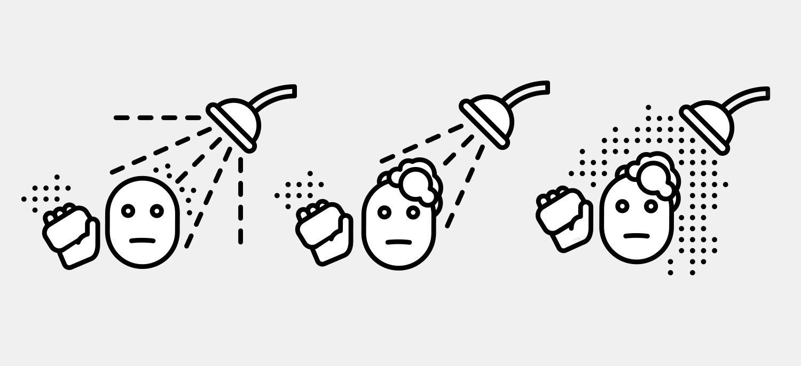

College Bubble

Given a prompt to make a system of logograms, I chose to create a design object that represents the bubble of college life.

I began noting how I spent my time throughout the day and, after collecting my data, began to illustrate the logograms. I chose to represent things college students often do alone: eating, showering, cleaning, walking in the rain, walking in the snow, thinking, sleeping, and taking notes.

Logogram progress
After finalizing the designs, I placed the logograms around the face of a prepurchased wall clock and jammed the reset button so that its hands spun around endlessly instead of telling the time of day.